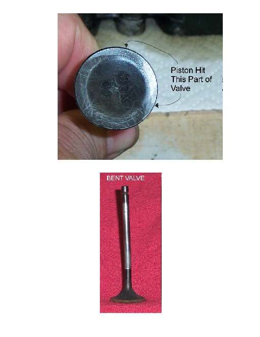
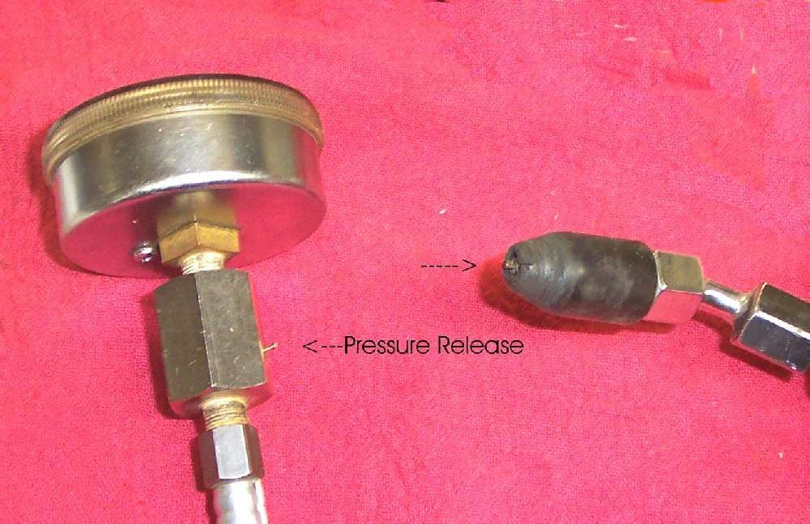
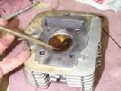

Compression is the squeeze the piston puts on the air in the cylinder. If rings, valves, the head gasket or the spark plug seal leak, the engine is hard to start, weak, and the kickstart goes down with little effort. MAVCC notes that wrong valve clearance is the most common compression fault on small engines (125 cc and below), so check that before anything expensive. The K-Light manual lists wrong valve clearance, a burnt or bent valve, a poor seat, a head gasket leak and a plug not seated as head causes, and worn, burnt or broken pistons and rings as cylinder causes.
Is it safe to ride?
Yes with care if it runs. Expect poor power on hills. Do not ride if compression is very low after a seizure or overheating.
Quick checks first
- Is the spark plug tight and its washer present?
- Any hiss at the plug or head joint when you kick or crank?
- When were the valves last adjusted?
- Any blue smoke, or a recent overheat?
- Blow dirt away from around the plug with air before unscrewing it, so none falls into the cylinder.
- On an engine with more than one cylinder, one low cylinder stops it ever running well. Test compression before cleaning carburettors again.
- Some off-road singles have an automatic compression release and read low on purpose when cranked. Compare with the value in your bike's manual.
Diagnose it step by step
1Is the spark plug tight, with a sealing washer?
- No: fit it correctly with Remove, check, gap and fit a spark plug, then retest.
- Yes: go to step 2.
2Measure with Test engine compression. Is it within the manual range? (K-Light 125: 1.0 to 1.2 MPa.)
- Yes: compression is not the problem. Go to Engine feels weak and down on power or Engine turns over but will not start.
- No, low: go to step 3.
3Four-stroke: check valve clearance cold with Check and adjust valve clearance. Was a gap too small or zero?
- Yes: set it and retest. If compression is now correct, the job is done.
- No: go to step 4.
- Two-stroke: go to step 4.
4Do the wet test (a little oil in the plug hole). Does compression rise clearly?
- Yes: the rings or cylinder are worn or the rings are stuck with carbon. Two-stroke with a choked exhaust and carbon: see Decarbonise a two-stroke exhaust and port. Otherwise go to step 6.
- No, little change: valves or head gasket. Go to step 5.
5Ask for Do a leak-down test. Where does air escape?
- Exhaust pipe or intake: valve not sealing (burnt, bent or carbon on the seat).
- Round the head joint: head gasket.
- Crankcase breather: rings. In all cases go to step 6.
6. Workshop: Assess the top end (cylinder, piston, valves). If compression is low after a valve job or timing work on an overhead cam engine, ask the workshop to check valve timing first.
What happens if you ignore it: the engine becomes harder to start, uses more fuel, burns oil and can overheat as hot gas leaks past the rings.
Causes, most likely first
| Cause | How to confirm | Fix |
|---|---|---|
| Valve clearance too small | Feeler gauge cold | Check and adjust valve clearance |
| Loose plug or missing washer | Plug turns by hand | Remove, check, gap and fit a spark plug |
| Worn or stuck rings | Wet test rises | Assess the top end (cylinder, piston, valves) |
| Burnt or bent valve, carbon on seat | No wet rise, air at exhaust or intake | Do a leak-down test |
| Head gasket leak | Air or soot at head joint | Do a leak-down test |
Reference values (K-Light 125)
| Item | Value | PDF page |
|---|---|---|
| Compression pressure | 1.0 to 1.2 MPa | 60 |
| Valve clearance, cold | 0.05 to 0.07 mm | 202 |